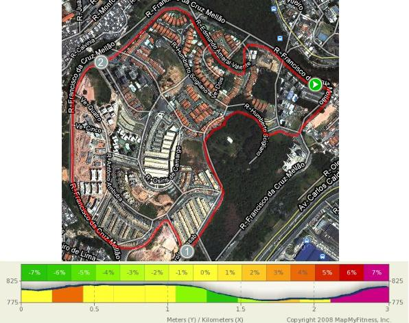
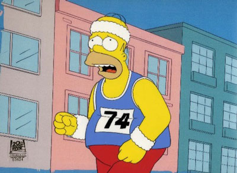
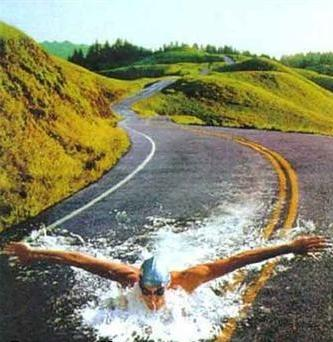

vamo, vamo, vamo…
Thiago Zamith
Thiago, trabalho com informática e estudo Educação Física.
Posts by Thiago Zamith
Treino bom
38 years
Domingo tive o meu melhor dia de treino, levantei as 06:00h e fui fazer uma prova cheguei em casa era umas 09:30 o sol já esta muito forte eu sabia que não ia fazer muito bem correr e como esse treino seria longo 15Km o sol já estaria rachando o coco, quando eram quase 10:00h estava eu fazendo meu alongamento e partindo para a corrida, fiz um treino por volta do meu condomínio aqui tem muito morro subidão mesmo o percurso que eu montei tem 3km então foram cinco voltas e sem água e nesse sol foi puxado, mas nada de esforço heróico foi o normal de treino no final estava ate me sentindo a vontade para correr, hoje (segunda) tirei para descansar porque amanha tem mais.
Estava esquecedo do tempo, o treino durou 1h19min
Estou colocando aqui o mapa desse treino com as elevações.

Superação
18 years
by Thiago Zamith
in Mundo
Sempre que vejo esse vídeo ou escuto falar desses dois me anima muito para treinar e resolvi dividir com todos aqui um pouco sobre eles.
O Team Hoyt’ (Equipe Hoyt) √© composto pelo pai (Dick Hoyt) e o filho (Rick Hoyt, nascido em 1962) em Massachusetts (EUA), juntos completaram maratonas, triatlos e outros eventos esportivos. Rick √© deficiente desde o nascimento, pois ao nascer, seu cordão umbilical ficou preso ao pesco√ßo, e ele perdeu oxigenio no cerebro.
Gra√ßas aos seus pais, que ignoraram os avisos dos m√©dicos que diziam que ele viraria um vegetal. Aos 12 anos Rick come√ßou a usar um computador especial para se comunicar, usando movimentos de sua cabe√ßa. Suas primeiras palavras foram: “Go Bruins!”, então sua familia descobriu que ele era um fã de esportes. Eles o ajudaram a correr sua primeira corrida em 1977, uma corrida beneficente de cinco milhas.
Dick é tenente-coronel aposentado da Air National Guard. Rick é graduado na universidade de Boston e agora trabalha na faculdade Boston. Eles continuam competindo em corridas, e também são motivadores.
Até Junho de 2005, o Team Hoyt já participou de um total de 911 eventos, incluindo 206 triatlos (seis deles competições Ironman Triathlon), vinte duatlos, e 64 maratonas, incluindo 24 maratonas de Boston consecutivas. Eles também pedalaram e correram a corrida dos EUA, em 1992 (uma jornada de 3735 milhas, completa em 45 dias).
Quando perguntam a Rick uma coisa que ele deseja, que ele gostaria de dar a seu pai, ele responde: “A coisa que eu mais gostaria de fazer por meu pai, seria senta-lo em uma cadeira e eu poder empurrar ele com minhas for√ßas”
Video deles em um Ironman:
Uma rapidinha
48 years
Hoje treinei, estou conseguindo cumprir a missão hoje seria dia de natação conforme a programação, mas como todos sabem tive que mudar, o treino foi de 6km podia ir mais mas preferi ficar com esses 6km mesmo, sexta feira não é fácil estou muito cansado estou dormindo pouco a semana inteira, media de 6 horas por noite como preciso de no mínimo 8 estou quebrado mesmo, bom é isso na terça eu volto pra contar como foram os treinos do final de semana.
Com a língua de fora.
58 years
Hoje o treino foi muito difícil, vou contar o que aconteceu e a mudança de planos.
Ontem meu treino foi de natação um tempo depois do treino comecei a ficar com a respiração curta, ficava cansado ate para falar, fiquei pensando o que poderia ser e tome Google para me ajudar, acabei descobrindo que o cloro da piscina causa isso e quando a piscina é aquecida isso se agrava, pois o vapor que sai da água fica no ar e eu ficava inalando tudo isso, antes eu não sentia porque a água era ionizada, ou seja, outro tipo de tratamento, resumindo por causa disso rodei 6km bem lento pois hoje ainda sentia um pouco de dificuldade para respirar, agora o treino vai ser só corrida e essa é a mudança que vou fazer, estava gostando de nadar pena que isso me complicou, mas as metas estabelecidas estão ai e amanhã tem mais treinos espero estar 100%.

Mais uma etapa
28 years
Consegui de novo, esse negócio de assumir compromisso num é que funciona rapaz, pensei duas vezes na hora de levantar, mas levantei criei mais uma estratégia deixo o celular longe do alcance hehe quando ele toca tenho que descer da cama e por ser uma beliche da mais trabalho ainda e já que desci não volto.
Bom o treino de hoje foram os prometidos 40 minutos nadando direto, totalizei nesse tempo 2.000mts uma beleza, me senti muito bem, amanha volto a corrida  depois conto como foi.

Essa é minha vida!
Compromisso número 1
38 years
Primeira missão cumprida e bota cumprida nisso foram 9km (não resisti ao trocadilho :D)
Mesmo percurso da semana passada 3 voltas de 3km cada pelo museu do Ipiranga e parque da independência o tempo foi mais alto que o  treino anterior 45min e 33seg 27 segundos a mais que semana passada valor insignificante para um treino, sem contar que esses dias quase não treinei, mas o que me deixou muito contente foi a forma que terminei o treino, muito mas inteiro e isso é bom não estava esgotado e me recuperei bem mais rápido.
Treino leve
38 years
Esse final de semana consegui treinar foram 7 km de corrida e mais uns 3km de caminhada isso no sábado, no domingo não treinei fui fazer uma prova e voltei sem pique,  essa semana espero fazer um treino completo, começando na terça pois na segunda (hoje) o Sesc não abre, vou traçar os objetivos da semana como se fossem tarefas (pendências) a cumprir, espero conseguir e ir melhor que na semana passada que quase não treinei.
 
Terça – 9 km museu do ipiranga
Quarta – Natação, fazer 40 min contínuos
Quinta – Treino de corrida (intervalado) 6 tiros (piques) de 1km com pausa de 2 min trotando
Sexta – Natação (intervalado) 4 x 500mts
Sábado – 10km (moderado)
Domingo – 6Km (ritmo forte)
Espero conseguir cumprir esses objetivos, não só essa semana, mas em todas que estão por vir.
Forças da natureza
38 years
Estava dormindo quando acordei com o barulho da chuva, pensei, tomara que acabe até as 6:00h horário de levantar para o treino mas não acabou, chovia ainda mais e não daria tempo de treinar é ruim e muito trabalhoso sair de moto na chuva tenho que colocar bota e capa, depois tirar e dobrar, não seria bom negocio levantar, esse é o segundo dia sem treino uma pena pois estava bem animado.
Espero que amanhã tenha sol, chegando √†s f√©rias vai ficar mais fácil se chover de manhã consigo treinar de noite e não vou perder mais treinos üòÄ
Treino de hoje “eu e a Nazar√©”
48 years
Hoje o treino foi dureza tudo por culpa da Nazar√©, ela já esteve no meu caminho por tr√™s vezes, foram tr√™s competi√ß√µes duas dos bombeiros e uma do dia da independ√™ncia, são provas de 10km que fiz a algum tempo, a Av. Nazar√© tem uma grande subida parece que nunca mais vai acabar e nessas competi√ß√µes a subida fica entre o 7¬∫ e 9¬∫ quilometro quase no fim do percurso, hoje meu treino foi praticamente nela, tr√™s voltas de 3km cada uma totalizando em 9km com tempo de 45min06seg, passar tr√™s vezes seguidas na Nazar√© não foi fácil, não mesmo, mas foi muito bom consegui fazer o que tinha planejado üòÄ
No final de semana também treinei, foi no domingo corri e caminhei uma media de 9km a Paula foi comigo, não resisti e deixei ela de lado por um momento para correr um pouco mais, ela fez uns 7km.
Já que o Claudio falou em desafio vou falar sobre o meu, logo entro de férias da faculdade vou ter mais tempo para me dedicar aos treinos, sempre tive vontade de vir trabalhar correndo são 21km uma meia-maratona de distancia, já até montei o percurso espero conseguir mas como ainda esta longe tenho tempo para treinar.
Foto: Percurso de hoje, no grafico da para perceber onde fica a Nazaré entre o Km 1 e 2.
Treino no museu do Ipiranga.
18 years
Hoje fui correr, foram 30 minutos apenas, era o tempo que tinha peguei muito transito mesmo estando de moto, mantive a media do treino anterior de 6km eu acho, quando entrei na pista de cooper do museu parte dela estava simplesmente fechada, com umas faixas zebradas, dessas que colocam em porta de bar quando tem um homicídio, mas esse não era o caso eu acho, tive que mudar o percurso e foram esses 30 minutos na mesma intensidade que da outra veze cheguei a media de 6km, achei bom mas pretendo baixar, como semana passada não treinei não evolui mas consegui manter o ritmo.
Estava lendo esses dias sobre a perda que temos quando não treinamos e achei interessante, procurei na internet e encontrei algo semelhante.
Efeitos fisiológicos de 2-4 semanas de destreinamento:
VO2 máximo: diminui 4-10%
Volume de sangue: diminui 5-10%
Freqüência cardíaca: sobe 5-10%
Volume bombeado por batida do coração: diminui 6-12%
Flexibilidade: diminui
Limiar de lactato: diminui
Atividade aeróbica de enzima: diminui
Economia de corrida: não muda
Por essa análise acredito que se você perde uma semana o efeito não é tão devastador como pensamos, mas manter a rotina de treinos é muito importante, não vamos treinar uma semana sim e outra não hehe.
.jpg "DSC01758 (1024x576)")
.jpg "DSC01816 (1024x576)")
.jpg "DSC01904 (1024x576)")
.jpg "DSC01926 (1024x576)")
.jpg "DSC01930 (1024x576)")
.jpg "DSC01934 (1024x576)")


{kind=link}
√öltimos comentários